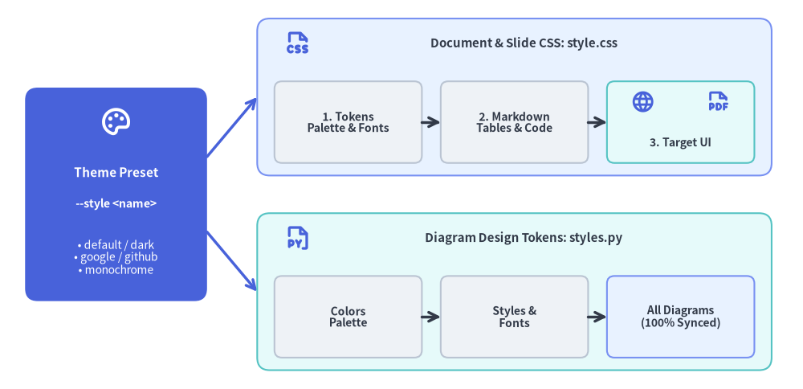
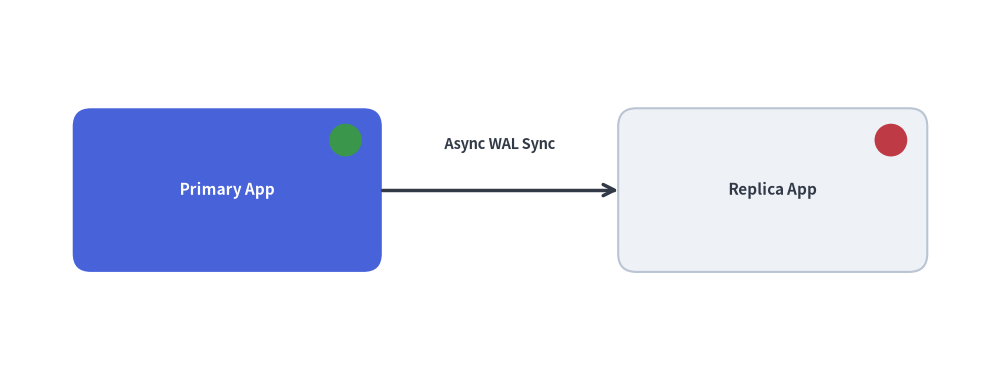

Customization & Theming: Templates, CSS & Injected Code
Drawlib is designed to integrate seamlessly into corporate design languages and custom developer workflows. You can customize HTML layout structures, modify stylesheets, and inject project-wide Python drawing helpers and style definitions.
A single theme preset (--style <preset>) synchronizes both your document CSS (style.css) and your diagram design tokens (styles.py):

Source Code
from drawlib.canvas import save, setup
from drawlib.icons import phosphor
from drawlib.lines import line
from drawlib.shapes import rectangle
from drawlib.styles import Styles
from drawlib.text import text
setup(width=128, height=62)
# Left Focal Card: Single Theme Preset
rectangle((18.5, 31), width=29, height=34, style=Styles.PrimaryFlat.patch(shape_r=2.0))
phosphor.palette((18.5, 42.5), width=5.2, style=Styles.WhiteBold)
text((18.5, 34.5), "Theme Preset", style=Styles.WhiteBold.patch(text_size=11.0))
text((18.5, 29.5), "--style <name>", style=Styles.WhiteBold.patch(text_size=10.2))
text((18.5, 21.0), "• default / dark\n• google / github\n• monochrome", style=Styles.White.patch(text_size=10.0))
# Branching connectors
line((33, 37), (41, 46.5), arrow_head="->", style=Styles.PrimaryBold)
line((33, 25), (41, 15.5), arrow_head="->", style=Styles.PrimaryBold)
# Top Branch: Document & Slide Styling (style.css)
rectangle((82, 46.5), width=82, height=25, style=Styles.PrimaryNeutral.patch(shape_r=2.0))
phosphor.file_css((47.5, 55.0), width=4.4, style=Styles.PrimaryBold)
text((83.5, 55.0), "Document & Slide CSS: style.css", style=Styles.DarkBold.patch(text_size=10.8))
rectangle(
(55.5, 42.5),
width=23.5,
height=13,
style=Styles.Neutral.patch(shape_r=1.2),
text="1. Tokens\nPalette & Fonts",
text_style=Styles.DarkBold.patch(text_size=10.0),
)
rectangle(
(82.0, 42.5),
width=23.5,
height=13,
style=Styles.Neutral.patch(shape_r=1.2),
text="2. Markdown\nTables & Code",
text_style=Styles.DarkBold.patch(text_size=10.0),
)
rectangle((108.5, 42.5), width=23.5, height=13, style=Styles.SecondaryNeutral.patch(shape_r=1.2))
phosphor.globe((102.5, 45.8), width=3.8, style=Styles.PrimaryBold)
phosphor.file_pdf((114.5, 45.8), width=3.8, style=Styles.PrimaryBold)
text((108.5, 39.2), "3. Target UI", style=Styles.DarkBold.patch(text_size=10.0))
line((67.25, 42.5), (70.25, 42.5), arrow_head="->", style=Styles.DarkBold)
line((93.75, 42.5), (96.75, 42.5), arrow_head="->", style=Styles.DarkBold)
# Bottom Branch: Diagram Canvas Styling (styles.py)
rectangle((82, 15.5), width=82, height=25, style=Styles.SecondaryNeutral.patch(shape_r=2.0))
phosphor.file_py((47.5, 24.0), width=4.4, style=Styles.PrimaryBold)
text((83.5, 24.0), "Diagram Design Tokens: styles.py", style=Styles.DarkBold.patch(text_size=10.8))
rectangle(
(55.5, 11.5),
width=23.5,
height=13,
style=Styles.Neutral.patch(shape_r=1.2),
text="Colors\nPalette",
text_style=Styles.DarkBold.patch(text_size=10.0),
)
rectangle(
(82.0, 11.5),
width=23.5,
height=13,
style=Styles.Neutral.patch(shape_r=1.2),
text="Styles &\nFonts",
text_style=Styles.DarkBold.patch(text_size=10.0),
)
rectangle(
(108.5, 11.5),
width=23.5,
height=13,
style=Styles.PrimaryNeutral.patch(shape_r=1.2),
text="All Diagrams\n(100% Synced)",
text_style=Styles.DarkBold.patch(text_size=10.0),
)
line((67.25, 11.5), (70.25, 11.5), arrow_head="->", style=Styles.DarkBold)
line((93.75, 11.5), (96.75, 11.5), arrow_head="->", style=Styles.DarkBold)
save()
1. Customizing HTML Templates (template.html)
Every Drawlib site and PDF project contains a Jinja2 template (template.html) in its source directory. You can edit this file to:
- Inject corporate branding, header navigation bars, or company logos.
- Add external web analytics (Google Analytics, Plausible) or telemetry scripts.
- Include custom Google Fonts or CSS frameworks.
Template Variables Provided by Drawlib:
{{ title }}: The title of the current document or site brand.{{ body }}: The compiled HTML content parsed from Markdown and embedded diagrams.{{ nav_sections }}/{{ nav_items }}: Structured navigation tree for the sidebar (insiteprojects).{{ css_href }}: Relative path tostyle.css.{{ custom_css }}: Injected inline CSS overrides.
2. Customizing CSS Stylesheets (style.css)
Drawlib projects include a local style.css in the source folder built with a 3-layer architecture (Layer 1: theme tokens, Layer 2: code & Markdown components, Layer 3: target layout for site, doc, pdf, or slide). You can edit this stylesheet directly to alter colors, typography, or spacing.
Built-In CSS Theme Presets:
| Theme Preset | HTML / Site | PDF / Doc | Slide | Description |
|---|---|---|---|---|
default |
Yes | Yes | Yes | Modern developer light theme inspired by VitePress & Tailwind CSS. |
default-dark |
Yes | Yes | Yes | Modern developer dark theme with deep slate & indigo palette. |
default-auto |
Yes | No | No | Responsive theme switching automatically via @media (prefers-color-scheme). |
google |
Yes | Yes | Yes | Clean editorial Google Blog & Material Design light style. |
google-dark |
Yes | Yes | Yes | Google editorial dark theme with Material Dark palette. |
google-auto |
Yes | No | No | Google editorial responsive theme switching between light and dark. |
github |
Yes | Yes | No | GitHub-flavored Markdown style with familiar code block and table formatting. |
minimal |
Yes | Yes | No | Lightweight, distraction-free minimalist typography. |
monochrome |
Yes | Yes | Yes | High-contrast black-and-white style suited for formal publications. |
Inspecting & Exporting Built-In CSS Themes (drawlib css):
You can inspect or overwrite your local style.css with any built-in Drawlib theme preset using drawlib css list and drawlib css show:
# List all available CSS presets for HTML and PDF targets:
drawlib css list
# Export the Google HTML theme to your project's style.css:
drawlib css show html google -o docs_src/style.css --force
# Export the GitHub HTML theme:
drawlib css show html github -o docs_src/style.css --force
# Export the Monochrome PDF theme:
drawlib css show pdf monochrome -o doc_src/style.css --force
3. Injected Project Styles (styles.py)
Rather than re-declaring custom colors and font styles in every single diagram or scattering ad-hoc style variables, Drawlib allows you to define a styles.py file in your source directory.
When placed in the project source directory (or passed via -s docs_src/styles.py), Drawlib loads styles.py to configure the project-wide Colors and Styles design tokens:
# docs_src/styles.py
from drawlib.fonts import FontRoboto
from drawlib.preset_colors import GoogleColors
from drawlib.preset_styles import GoogleStyles
# 1. Initialize project-wide color palette and style catalog
Colors = GoogleColors()
Styles = GoogleStyles().patch_font(
regular=FontRoboto.ROBOTO_REGULAR,
bold=FontRoboto.ROBOTO_BOLD,
thin=FontRoboto.ROBOTO_THIN,
)
# 2. Derive reusable custom component tokens
CustomCard = Styles.PrimaryNeutral.patch(
shape_line_width=1.5,
text_size=10.0,
)
Available Preset Styles & Colors Classes:
drawlib.preset_styles:DefaultStyles,DefaultDarkStyles,GoogleStyles,GoogleDarkStyles,MonochromeStyles,MonochromeDarkStylesdrawlib.preset_colors:DefaultColors,GoogleColors,MonochromeColors,CssColors
Seamless Theming with from drawlib.styles import Styles, Colors
When styles.py is present, all embedded drawlib blocks automatically inherit these settings when importing standard tokens:
# Inside your Markdown drawing code:
from drawlib.canvas import setup
from drawlib.shapes import rectangle
from drawlib.styles import Styles
setup(width=80, height=40)
# Automatically rendered using the GoogleStyles theme and Roboto fonts configured in styles.py
rectangle((40, 20), width=50, height=25, style=Styles.PrimaryFlat, text="Unified Themed Card", text_style=Styles.WhiteBold)
Cohesive Design with style.css
When scaffolding projects using drawlib init <type> --style google (or monochrome, default, default-dark, google-dark), Drawlib automatically synchronizes both styles.py (for Python illustrations) and style.css (for HTML/PDF/Slide typography and card backgrounds). This ensures that editorial prose and embedded architectural diagrams share a 100% unified visual identity.
4. Injected Helper Functions (utils.py)
For reusable composite drawing elements (such as specialized server racks, status badges, or complex icons), author custom functions in utils.py:
from drawlib.canvas import save, setup
from drawlib.lines import line
from drawlib.shapes import circle, rectangle
from drawlib.styles import Styles
from drawlib.text import text
# Defined in docs_src/utils.py (imported as `import utils` in Markdown blocks):
def draw_server_node(xy: tuple[float, float], name: str, *, is_active: bool = True) -> None:
x, y = xy
style = Styles.PrimaryFlat.patch(shape_r=2.0) if is_active else Styles.Neutral.patch(shape_r=2.0)
t_style = Styles.WhiteBold.patch(text_size=11.0) if is_active else Styles.DarkBold.patch(text_size=11.0)
rectangle((x, y), width=34, height=18, style=style, text=name, text_style=t_style)
# Status indicator LED (Green = Active, Red = Standby/Offline)
indicator_style = Styles.SuccessFlat if is_active else Styles.DangerFlat
circle((x + 13, y + 5.5), radius=1.8, style=indicator_style)
# Inside your Markdown drawing code (`drawlib build ... -u docs_src/utils.py`):
setup(width=110, height=42)
draw_server_node((25, 21), "Primary App", is_active=True)
draw_server_node((85, 21), "Replica App", is_active=False)
line((42, 21), (68, 21), arrow_head="->", style=Styles.DarkBold)
text((55, 26.0), "Async WAL Sync", style=Styles.DarkBold.patch(text_size=10.5))
save()
